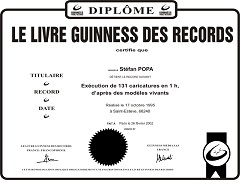

STEFAN POPA POPA'S was born on June 11th 1955, in Caransebes, Romania. At the age of five he begins
to draw on table cloths and curtains. At the age of seven, when his first cartoon is published in
a regional newspaper, he calms his parents by beginning to draw on paper. At the age of 14 he published
his first cartoon in the only humor magazine available in Romania under Ceausescu's regime and he starts
to participate in National and International Salons. Due to trips in France facilitated by Mr. Henry
Coursaget, President of the Festival in Confolens, he discovers the universal cartoon and starts his
professional period.
In 1980 Popa's graduates from the Polytechnic Institute in Timisoara and becomes the official cartoonist
at the Festival in Confolens and other international festivals.
In 1990 he wins a UNESCO scholarship, publishes the first satirical graphic art album. He meets and works
side by side with great artists and cartoonists such as: Salvador Dali, Jerry Robinson (Superman's and
Batman's author), Vasquez De Sola, Plantu, Emerson, La Palma, Tim, Morchoisne.
At the international Festival of Cartoon from Saint-Esteve (France) he breaks the world record for resistance
(during 10 days and 10 nights he draws 1527 portraits in colors) and on October 17th 1995 he succeeds to
break the world record for speed that belonged to the belgian Emile Robin (106 cartoons in one hour),
drawing 131 cartoons in one hour and therefore, is declared the fastest cartoonist in the world; this
record was homologated in the Guiness Book from the Phillippines.
At the same festival he succeeds to
break his own record by making 2772 cartoons in colours in 10 days and 10 nights and obtains the votes
of the French public and tourists, who came to the International Festival from Saint-Esteve, for best
resemblance between the cartoons and the models.
Due to all these results he is rewarded the title of Best Man Baixa nom Briale.
As the President of honor of the Romanian Cartoonists' Association he organizes all the professional salons from Romania. He has founded the first Museum of the Romanian Cartoon at the Castle from Macea (Arad). Dali’s portrait, signed Popa’s 95, is included in the catalogue from the Museum Salvador Dali. On the occasion of the 80th anniversary of the humor magazine “Canard Enchaine”, he was invited to Sierre in Switzerland and to Forte dei Marmi in Italy. Invited by Hassan the second, King of Maroc, to the Bab Rouah Royal Court, in 1997. Invited to the Beethoven Festival, Ringstrasse Galery, Vienna, Prater, 1998. Official Cartoonist at the 1996 Summer Olympics from Atlanta, World Cup, 1998. Invited to the Tourism Fair from Berlin 1998, 1999 and to The World is Coloured Festival, Ingolstadt, Germany, 1999, 2000. Official Cartoonist at the Summits in Bucharest and Prague, 2002, Official Cartoonist at the 37th Chess Olympiad from Turin, 2006. Invited by the Romanian Academy to the International Session called Think Europe, where he drew presidents of academies from the entire world, Sinaia, 2002. In China, he receives the title The Best of the World for portrait, 2002. His works can be seen in famous museums such as the Ermitage from Sankt Petersburg.
Was decorated by the president Ion Iliescu with the title Knight of Honour in culture. Member of honour in the International Police Association. He colaborates as a teacher at the Vest University from Timisoara. Member of the Plastic Artists’ Union from Romania and of the Professional Plastic Artists’ Union. He has a permanent personal exhibition at the Victoria Pallace, Romania’s Government.
He is Citizen of Honour in 26 cities from Romania: Timisoara, Cluj, Caransebes, Dr.Turnu-Severin, Slatina, Ploiesti, Vaslui, Fagaras, Zalau, Gura Humorului, Mangalia etc.
On january 21st, Popa signs a contract with the Cartoonists’ and Writers’ Trade Union (U.S.A) and publishes in 144 important newspapers and magazines all over the world:
Szpilsky-Poland, Interpress Graphic - published on 6 continents; Damage, La Nouvelle Republique, VSD, Sud - Ouest, Centre Presse, Liberation, Charente Libre, L’Humanite, Canard Enchaine etc. - France; Jez - Yugoslavia; Stirsel - Bulgaria; Cearceaf, Huriviet Vafki - Turkey; Daily World - USA; Hocipo, Magyar Hirlap - Hungary; Yomiuri Simbun - Japan; L’Afrique - Congo; L’Ecuatore - Morocco; Krokodil - Russia; Carioca - Brazil; Bargladet - Denmark.
During his career, a series of films and shows are produced on Popa’s, in the following countries: USA, Canada, France, Denmark, Yugoslavia, Hungary, Romania, The Moldavian Republic, Poland, The Chech Republic and Germany.
He also receives awards for his exceptional activity from the Romanian Television and from the Humourists Association.
POPA'S is the first romanian to enter the Guiness Book, The Philippines Editions... ...more awards
Stefan Popa POPA'S is a force of the nature... ...more Andre Baur
POPA'S is an Ace!... ...more Alain Grandremy
... I just love what he does... it's original... it's even perfect, technically. ... more Jean Claude MORCHOISNE
... more articles


{kind=link}